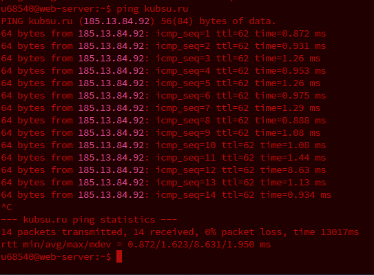
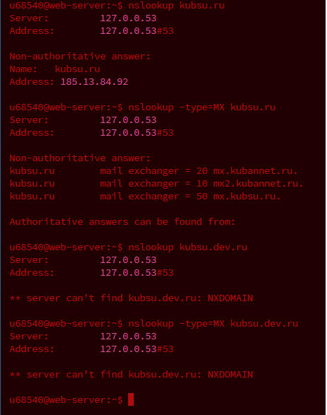
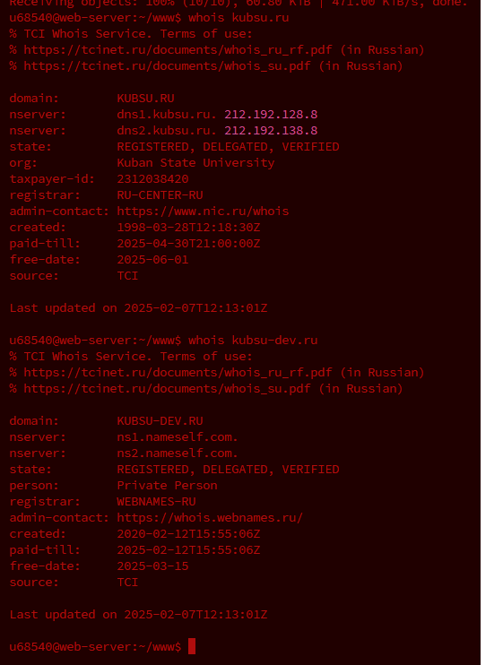

Первое задание Анков Мирослав 28/2
1 С помощью команды ping на учебном сервере узнать IP-адрес веб-сервера
kubsu.ru, сделать скриншот вызова команды ping, добавить скриншот в git�репозитарий задания.

2 С помощью команды nslookup узнать A-записи и MX-записи домена kubsu.ru и
kubsu-dev.ru, добавить скриншоты в git-репозитарий задания.

3 С помощью команды whois узнать дату регистрации домена kubsu.ru и kubsu�dev.ru, добавить скриншоты в git-репозитарий задания.
